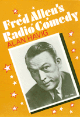

<body bgcolor="#FFFFFF" text="#000000" link="#0000FF" vlink="#CC0000" alink="#CC0000"><center><hr width="350" size="1" align="center" noshade>Tracing a career that lasted from 1912 into the 1950s, Havig describes the "verbal slapstick" style that was Fred Allen's hallmark and legacy to American comedy<hr width="350" size="1" align="center" noshade><p><a href="https://cdcshoppingcart.uchicago.edu/Cart/ChicagoBook.aspx?ISBN=9780877227137&&PRESS=temple" target="_top">Buy this book!</a> | <a href="https://cdcshoppingcart.uchicago.edu/Cart/Cart.aspx?PRESS=temple" target="_top">View Cart</a> | <a href="https://cdcshoppingcart.uchicago.edu/Cart/Cart.aspx?PRESS=temple" target="_top">Check Out</a></p><p></p></center><!--none//--><h1>Fred Allen's Radio Comedy</h1>
<h3>Alan Havig</h3>
<P>cloth 0-87722-713-6 $66.50, Sep 90, <FONT COLOR=#990033>Available</FONT>
<br>paper 0-87722-810-8 $27.95, Oct 91, <FONT COLOR=#990033>Out of Stock Unavailable</FONT>
<br>Electronic Book 1-43990-560-6 $29.95 <FONT COLOR=#990033>Available</FONT>
<BR> 296 pp
</P><BLOCKQUOTE><I>"A notable example of radio at its best."</I>
<br>&#151<b><I>Back Stage/SHOOT</I></b><I></I></BLOCKQUOTE>
<p>In 1954, James Thurber wrote: "You can count on the thumb of one hand the American who is at once a comedian, a humorist, a wit, and a satirist, and his name is Fred Allen." Several decades after his death and more than forty years since his radio program left the air, Fred Allen�s reputation as a respected humorist remains intact. In this book, Alan Havig explores the roots of his comedy, the themes it exploited, the problems and challenges that faced the radio comedy writer, and Allen�s unique success with the one-dimensional medium of radio. Tracing a career that lasted from 1912 into the 1950s and encompassed vaudeville, Broadway revues, movies, radio, and television, Havig describes the "verbal slapstick" style that was Fred Allen�s hallmark and legacy to American comedy.
<p>More than a biography of Fred Allen, this is a study of the development of the radio industry, a discussion of American humor, and the story of how one relates to the other. Using a wide variety of published and unpublished sources, including the Allen Papers, Havig analyzes Allen�s radio comedy of the 1930s and 40s within the context of the peculiar advantages and limitations of radio as a medium for comedy. He argues that Allen did not merely transfer vaudeville routines to a non-visual medium as did Eddie Cantor, Ed Wynn, and others. Allen developed a comedic style that depended on word play, sound effects, and on his audience�s ability and readiness to imagine a visual world in which his eccentric characters operated.
<p>Havig illustrates his story with numerous examples of Allen�s humor, with fascinating anecdotes, and excerpts from radio broadcasts. In accounting for the comedian�s success, he deals with vaudeville, comedy writing, sponsor�s demands and censorship of material, and the organizational world of radio broadcasting companies.
<p>Describing radio as "an instrument of wit," Fred Allen wrote: "on radio you could do subtle writing because you had access to the imagination...that was why I liked radio. we had some fun." Readers will also have some fun remembering or discovering for the first time Allen�s Alley and the magic of radio comedy in its prime.
<BR>&nbsp;<h2>Reviews</h2>
<p><I>"Fred was one of the greatest of vaudeville and radio comedians. Anyone even casually concerned with the state of American humor will be well advised to give his work, as Mr. Havig presents it, careful study."</I>
<br>&#151<b>Steve Allen</b>
<p><I>"Alan Havig has done an intelligent, careful and exhaustive research job. This is a well-written, solid performance-biography."</I>
<br>&#151<b>J. Fred MacDonald</b>, Curator of the Museum of Broadcast Communication, Chicago
<p><i>"A Stephens College (Missouri) professor of history here examines Allen's (1894-1956) 20 years in vaudeville, his career in radio from 1933 to 1949, and his characteristic brand of air-wave comedy, and concludes that Allen was a literary humorist who created 'comedy uniquely aural in achievement and appeal.' His humor, as Havig observes, frequently involved parody, insult (as in Allen's long-time feud with Jack Benny); puns; dialect humor (a Chinese-American was a 'Yangtse Doodle Dandy'); worldly satire; and sporadorically profound wit (Allen defined life as 'a lull between stork and epitaph' and a spinster as 'a woman who indulged once too seldom'). Havig's searching account amuses and informs, offering further proof that the line between high and popular culture has blurred in our century."</i>
<br>&#151<b><i>Publishers Weekly</i></b>
<BR>&nbsp;<h2>Contents</h2><P>
<p>Acknowledgments
<br>Illustrations
<br>1. An Introduction
<br>2. The World of a Smalltimer, 1894-1932
<br>3. The Fred Allen Shows, 1933-1949
<br>4. Creating Radio Comedy
<br>5. Fred Allen and Radio Censorship
<br>6. Fred Allen's Comedy of Language
<br>7. Fred Allen, Satirist
<br>8. Allen's Alley, 1942-1949
<br>9. An Epilogue
<br>Appendix: The Complex World of Network Radio
<br>Notes
<br>Index
</P><BR>&nbsp;<H2>About the Author(s)</H2>
<P><b>Alan Havig</b> is Professor of History and American Studies at Stephens College in Columbia Missouri.</P>
<BR><H2>Subject Categories</H2>
<p><A HREF="/tempress/general.html" TARGET="_top">General Interest</a>
<BR><A HREF="/tempress/american.html" TARGET="_top">American Studies</a>
</p>
<BR><h2 class="inpageheading">In the series</H2>
<P><I><a href="http://www.temple.edu/tempress/am_civ.html" onMouseOver="window.status='Click for other books in this series!'; return true;" onMouseOut="window.status=''; return true;" target="_top">American Civilization</a></i>, edited by Allen F. Davis.
</p><p>The focus of <i>American Civilization</i>, edited by Allen F. Davis, is American cultural history. In keeping with the interdisciplinary work in this field, which characteristically brings together art history, literary history and theory, and material culture, the titles in this series cover diverse aspects of American experience&#151from attitudes toward death to twentieth-century design innovations to images of country life in art and letters to trade unions' reliance on religious discourse. The series has been a pioneer in presenting work that uses photographs as historical documents and from its inception has been firmly committed to women's studies. As the first university press series in the field, <i>American Civilization</i> provided the inspiration and the standard for much of the interdisciplinary work developing in the contemporary academy.</p>
<p align="center"><a href="https://cdcshoppingcart.uchicago.edu/Cart/ChicagoBook.aspx?ISBN=9780877227137&&PRESS=temple" target="_top">Buy this book!</a> | <a href="https://cdcshoppingcart.uchicago.edu/Cart/Cart.aspx?PRESS=temple" target="_top">View Cart</a> | <a href="https://cdcshoppingcart.uchicago.edu/Cart/Cart.aspx?PRESS=temple" target="_top">Check Out</a></p><p><font face="Arial" size="1"><a href="copyright.html" onMouseOver="window.status='Web Copyright Policy';return true;" onMouseOut="window.status=''" title="Web Copyright Policy">&copy;</a> 2015 <a href="http://www.temple.edu" target="new" onMouseOver="window.status='Link to Temple University home page';return true;" onMouseOut="window.status=''" title="Link to Temple University home page">Temple University</a>. All Rights Reserved. http://www.temple.edu/tempress/titles/660_reg.html</font></p>